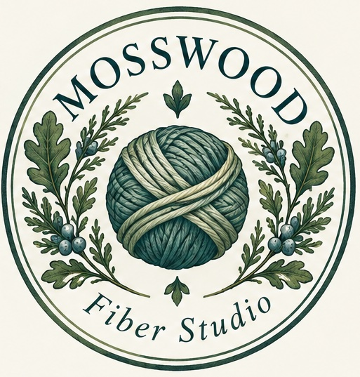
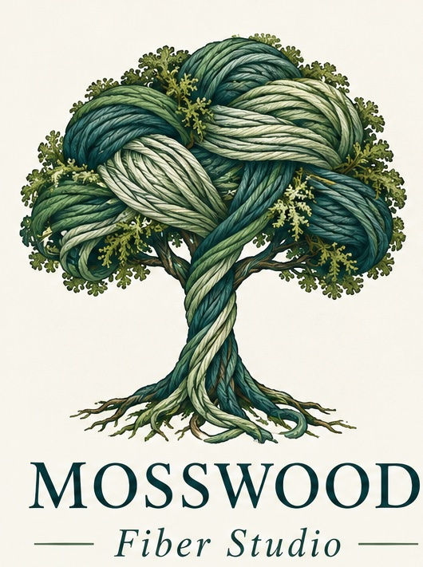

Get in touch
Reach out for class inquiries, teaching availability, pattern questions, and fiber-arts conversations.

To reduce spam, the studio email is written out instead of linked directly.
mosswoodfiber [at] gmail [dot] com
Please include your name, the class or topic you are asking about, and the best way to reach you.